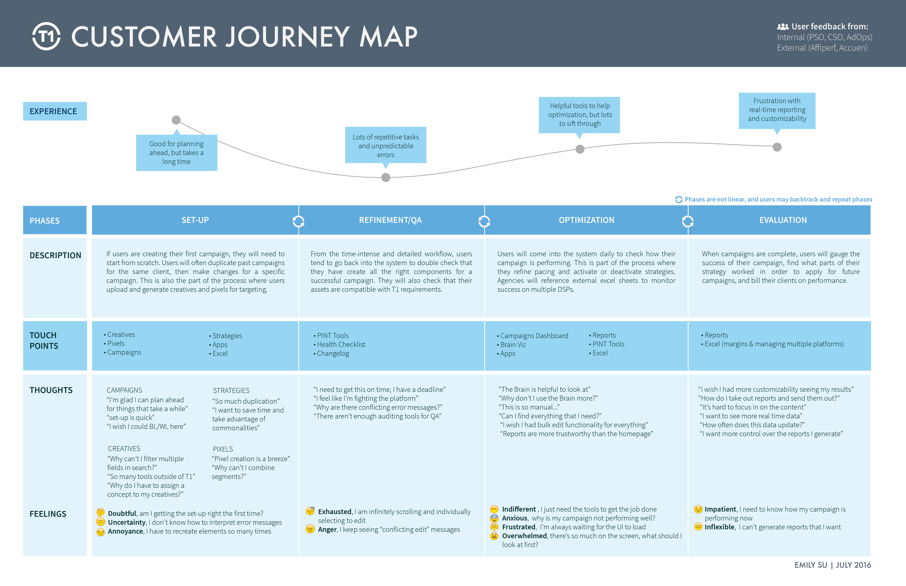
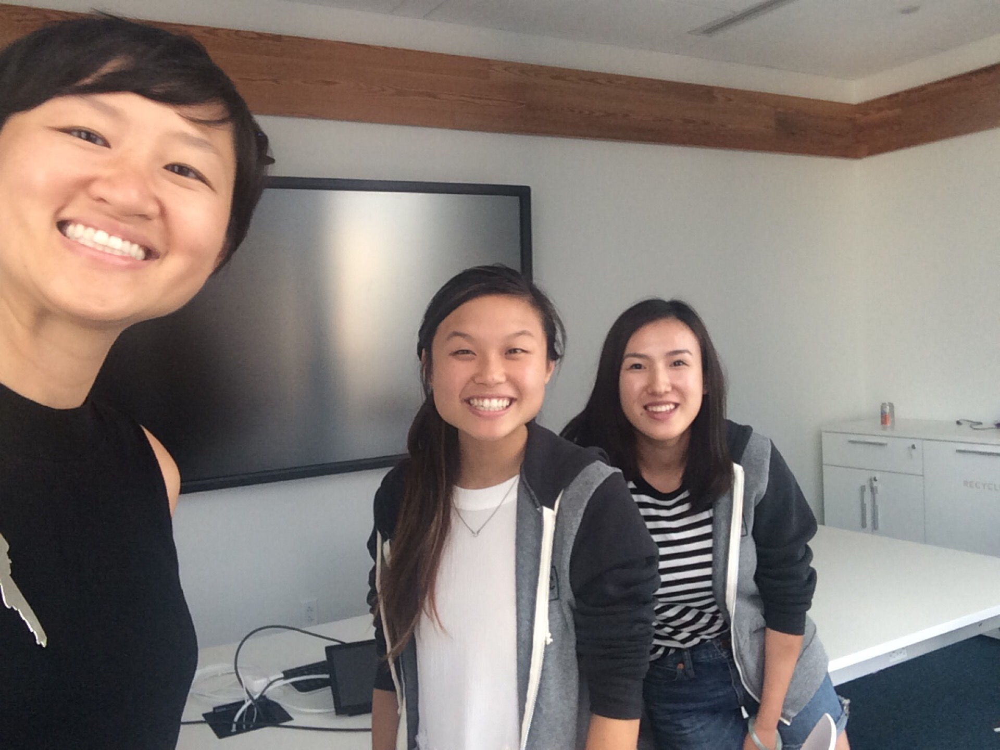

MEDIAMATH
Role: UX/UI Design Intern
Design Tools: Sketch, Illustrator, InVision
Research Methods: Customer journey mapping, empathy mapping, paper prototyping, user testing, user interviews
Duration: Jun 2016 - Aug 2016 (11 weeks)
Team Members: Caroline Chung, Bella Zhang, Simon Harbour
Over the course of the summer, I created a customer journey map for product managers, worked on an 8 week project for a new product named Helix and worked on user flows for ad creation for Facebook’s new ad exchange.
I also did performed a competitive audit and led initial discovery interviews for onboarding guides, conducted data-driven research for new interactions and navigation bars, and won Best in Show and People’s Choice Award in the company internal hackathon designing a workflow for an audio assistant version of our platform.
Understanding the Overall Experience
In the beginning of my internship, I was tasked to understand the user's overall experience in TerminalOne, MediaMath's main offering, by conducting interviews with various types of users of the platform. This also helped me quickly understand and learn the complexities of the platform and principles of digital advertising in order to understand what space I was designing for.
This particular customer journey map was created as a tool to remove product managers from the specific features they work on to help understand the higher level experience that users have through their experience in TerminalOne, MediaMath's main offering. This tool is also designed to help them understand where their product might fit in the workflow. This was particularly important, especially since there were 21 distinct product managers that focused primarily on one aspect of the platform.
The map was also created to help summarize feedback that has been repeated throughout various personas and users and help product managers understand whether their features improve and alleviate pain points that are surfaced in the customer journey map.

Helix
The bulk of my internship was designing a new product, Helix. While the product manager began to lay out the product requirements and understand the complexity of the product and the inner workings with engineering, legal, and commercial, I focused primarily on the building the lookalike audience model product feature. In the initial process of discovery, I also created a premium and standard trial workflow for two versions of the Helix product, but the trial was eventually replaced in favor of only offering the premium product.
Our goal was to make the process of building a lookalike audience, to targeting advertisements with those audiences, as seamless as possible, while introducing new data fields that have never been in similar model building platforms to improve the accuracy of their model, so that they could understand how their lookalike audience was enhanced while still using an effortless workflow in order to create a lookalike audience model.
This involved two main parts: 1) understanding the user mental model to reflect the end user goals of targeting their audiences, and 2) question based creation forms with conversational language in order to provide clarity of what each step was for, rather than using technical terminology.
After multiple iterations and rapid prototyping, I took 2 weeks to user test the model building page with 5 user groups from 1-5 participants of various experience levels. We then consolidated the feedback for key insights, for further improvement in the current designs and to inform future design decisions.
Screens and further process work available on request.
Ad Creation
With the Facebook Ad Exchange shutting down on November 1st, I had the opportunity to lead ideating and low fidelity prototyping sessions to redesign the ad creation workflow in my last two weeks. While I cannot discuss the entirety of the process due to my Non-Disclosure Agreement, this process taught me how impactful designers are with the initial designing process, and how even low-fidelity prototypes help guide decision making in especially tight deadline situations. I realized the importance of defending the user in the beginning stages of a product in order to set a crucial foundation for later iterations and versions of products.
Takeaways
One of the most interesting things was that MediaMath had developed its own language within its company when it referred to product features and advertising terminology. By getting the opportunity to interview and talk to clients, I realized the absolute importance of being able to step out of the company's own product and seeing how real, actual (and the majority of!) users perceived and used our product. Understanding this key insight helped me keep the users first when designing.
Beyond all, I realized how important it was to talk through workflow and design blocks with my team. When product managers focus on releasing features as quickly as possible, I had the designers on my team help me push back, sharing the same mission to defend and spend the thought and time to understand user needs and perceptions, which was an incredible learning experience throughout the design process at MediaMath.

The team!